wxGlade Tutorial
(for versions >=0.8.0, currently only available from the repository, to be downloaded from https://bitbucket.org/wxglade/wxglade/get/default.zip )
- wxGlade Tutorial
- Running wxGlade
- wxGlade Overview
-
wx Basics:
- Concept
-
Sizers (Layout Managers)
- Example: Calculator window
-
Example Project: Calculator
-
Part 1: Create Calculator Window; some basics about sizers and layout
- Excursion: Layout properties: Proportion and Alignment->wxEXPAND:
- Part 2: Add a Notebook
- Part 3: Use of Spacers
- Part 4: Use Grid Sizers
-
Create Python Source Code
- Code for the project windows
-
Code for event handlers
- Example: button event EVT_BUTTON
- Add a Menu
- Add a Status Bar
- Add a Toolbar
- Dialogs, Frame arguments
- Bitmaps
- Custom Widget
-
Reference: Keyboard and Mouse Actions
- Tree Window:
- Design Window
- Menu Editor
- Palette Window / All
- Further reading:
Running wxGlade
Start: To run wxGlade, start the wxglade.py or wxglade.pyw program file with the Python interpreter.
Prerequisites:On Windows, the win32 extensions should be installed: https://sourceforge.net/projects/pywin32/
Supported Python and wxPython Versions:
- The ‘classic’ wxPython versions 2.8 and 3.0 are supported as well as wxPython Phoenix running under Python 3
- Phoenix plus Python 2 will probably also work, but this is not tested at all. wxPython 2.8 is generally less tested than the more recent versions.
- When running Python 3 + Phoenix or Python 2 + Classic, the generated code will not be compatible to the other version.
wxGlade Overview
wxGlade consists of five main windows:
(click on one of the images to see it full size)
 |
Main Palette window:
This is the main window with the main window.
There is an icon for each window and control type that can be added to a project.
|
| 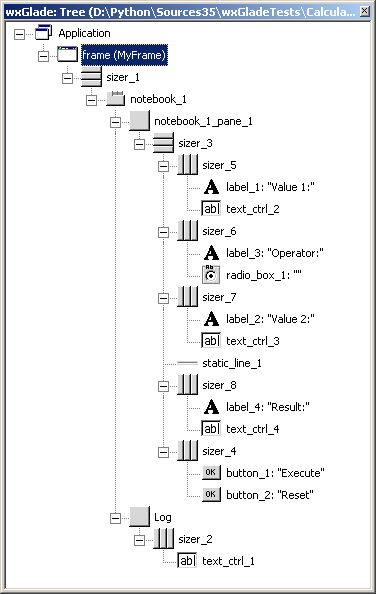 |
Tree window:
This window visualizes and allows to edit the structure of the project with it's application, windows, sizers and controls.
On selection of an item, it's properties will be shown in the Properties window.
|
| 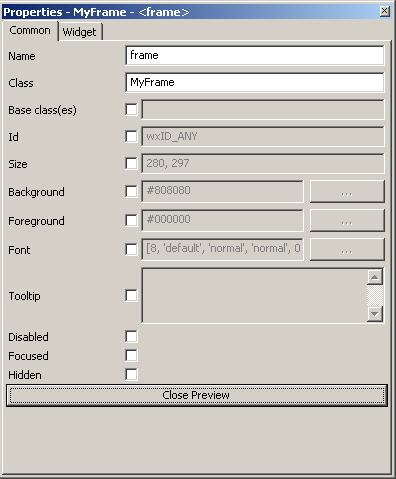 |
Properties window:
This allows to display and edit properties of applications, windows and controls.
To edit an item, select it in the Tree or Design window.
|
 |
Design window:
Visualizes the design of the window; it is not 100% identical to the final window.
To open this window, double-click a window's icon in the Tree window.
|
|
Preview window:
A preview of the current window; should be 100% identical to the window as when it is used later on.
|
See last page of this Tutorial for keyboard shortcuts and mouse actions.
Before doing anything else, you may want to open an example file showing most of the supported controls:
- for wxPython 3.0 / Phoenix: examples\AllControls_30.wxg
- for wxPython 2.8: examples\AllControls_28.wxg
Open the file; double-click "All_Widgets" in the Tree window to open the Design window and have a look around.
wx Basics:
Concept
wxPython is a Wrapper around the wxWidgets GUI library, which is written in C++.
See here for a small example application showing some building blocks:
- App instance
- Frame instance for the main window
- event handling
- controls
- sizers for layout
- the MainLoop (right at the bottom of the page)
Sizers (Layout Managers)
With wxWidgets/wxPython and similar toolkits, usually controls are not placed at pixel positions on their windows, but the layout of a window is managed by sizers. There are horizontal box sizers, vertical box sizers and grid sizers. The box sizers may have a label and a box around them. In this case they're called static box sizers. Each sizer and sizer item can be fixed size or grow to fill the available space, e.g. when the window is resized.
Example: Calculator window
This window is managed by one vertical box sizer with six slots for the five rows plus horizontal line and five horizontal box sizers for e.g. one label and one button:
The Design and Preview windows look like this, but without the colored frames for the horizontal and vertical sizers:

Each blue frame is a horizontal sizer with two slots each. The borders between slots are visualized with dashed lines.
The inputs for Value 1 and 2 are set to grow horizontally; the Result output is growing horizontally and EXPANDing vertically.
|
In the Tree window, you can see the hierarchical structure:
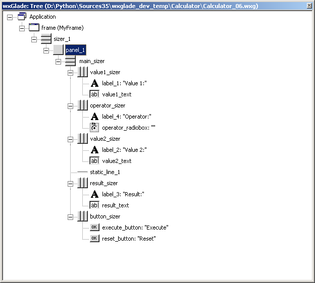
Note that horizontal and vertical sizers are visualized with different icons: .
|
Later we'll have a look at alternative structures which allow better alignment of the fields.
Example Project: Calculator
Part 1: Create Calculator Window; some basics about sizers and layout
In this section we will go through the steps to create the simple calculator window from above. In later sections we will modify it to highlight certain features like other sizer types, menus and status bars.
For the basic structure:
- Select File->New to create a new file and save it to a directory.
- Add the frame by clicking on the Frame icon in the section "Windows":

- A frame with a sizer and one slot is now visible in the Tree and Design window (there the slot is visualized by a hatched area)
-
It would be possible to place controls directly on the frame, but usually a panel is added first
To add one:
- in the Palette window click on the panel icon
 to start the placement
to start the placement
- in the Tree or Design window, click in the slot to place the panel there
-
On the panel we need a vertical sizer with six slots:
- in the Palette window click on the sizer icon to start the placement
- in the Tree or Design window, click on the panel to place the sizer there; a dialog will open; set "Orientation" to "Vertical" and the number of slots to "6"
- Now add a horizontal box sizer to the first slot: do as before, but keep "Orientation" as "Horizontal" and set the number of slots to "2"
- Place a label in the top left slot and a text control
 in the right
in the right
Your design should now look like this:
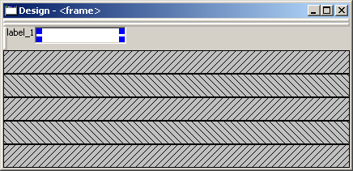
The label does not yet display something useful, it is not aligned and the text control is not filling the available space.
So, some properties of the label and the text need to be modified:
- Select the label in the Tree or Design window.
- If not yet visible, open the Properties window.
-
In the Properties window:
- edit the label to display "Value 1:" by entering this on the editor tab "Widget"
- align the label vertically by going to tab "Layout" and selecting "wxALIGN_CENTER_VERTICAL"
- make the text control fill the available space by going to tab "Layout" and set "Proportion" from 0 to 1
Excursion: Layout properties: Proportion and Alignment->wxEXPAND:
The "Proportion" of 1 makes the element grow with a proportional factor of 1 when the horizontal sizer is growing. Please note that this growth happens only in the "main" direction of the sizer; the sizer is horizontal, so this change makes the text control grow in width. For a growth in the other direction, "wxEXPAND" in the "Alignment" box would need to be activated. You may try this to see the difference:
Horizontal Sizer: Proportion 0
Text Ctrl: Proportion 0
|
Horizontal Sizer: Proportion 1
Text Ctrl: Proportion 0
|
Horizontal Sizer: Proportion 1
Text Ctrl: Proportion 1
|
Horizontal Sizer: Proportion 1
Text Ctrl: Proportion 1, EXPAND
|
The first row occupies the minimum height as defined by the label and the text control.
The text control occupies its minimum width, as defined.
|
The first row consists of the horizontal sizer.
It grew vertically, as it is placed in a vertical sizer.
|
The text control grew in width, as it is in a horizontal sizer. |
The text control expanded vertically, i.e. perpendicular to the main direction of the surrounding horizontal sizer. |
Add the remaining rows: copy "Value 1" to "Value 2" and "Result"; add "Operator" and the buttons
We need almost the same combination of sizer/label/text for the second value, so we'll copy the sizer including it's content.
There are several methods to copy:
-
Copy & Paste:
- in the Design Window select the ‘handle’ of the sizer, which is shown in red here:

- then hit Ctrl-C to copy the selected sizer (or use the context menu)
- select the third slot, where you want to place a copy
- then hit Ctrl-V (or use the context menu)
- you may as well copy and paste in the Tree window
-
Drag & Drop:
- drag the sizer handle to the empty slot while holding the Ctrl-Key
- drag the sizer icon in the Tree window to the empty slot, again holding the Ctrl-Key
Change labels and names:
After copying, the controls will have default values and names. Usually you have to change them. You can do this in the Properties window or directly in the Tree window. To edit in the Tree window, you can click on the label or press F2 while it is selected.
In the next steps fill the other slots of the main sizer:
- repeat the copying to fill SLOT 5 and rename the label to "Result" and the text control to "result_text".
- insert a sizer with two buttons into SLOT 6

- add a horizontal line into SLOT 4 and enable wxEXPAND for this

- insert a sizer, a label and a radio box into SLOT 2

Define the options "+-*/" for the radio box by going to the "Widget" tab:
- Select the label in the Tree or Design window.
- Hit "Add" to add choices, modify them and then hit the "Apply" button.
- See the bottom part of the image:
|
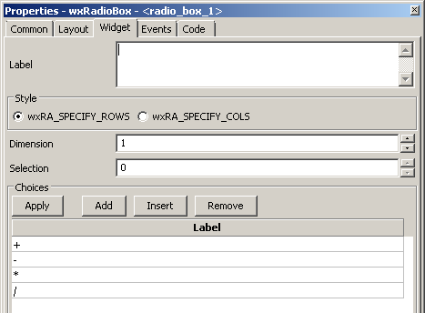 |
Some hints:
- when you want to place multiple elements of the same type, just hold the Ctrl key when placing an element to stay in placement mode (on Mac OS use the Shift key).
- When you have placed an element in the wrong slot, just drag it to the right slot or delete it with the Del key or the context menu.
Your design should now look like this, if you make the window a bit larger:
So all elements are there, but the layout is not yet what we want to have:
- we don't want the first rows to grow, so for the four horizontal sizers around "Value 1", "Operator", "Value 2" and the buttons we need to go to the "Layout" tab set "Proportion" to 0
- we want the Result text control to fill the available vertical space; so we need to set "wxEXPAND" for the text control
- we want the buttons at the bottom to be centered; so the layout of the sizer around them needs to be set: "wxEXPAND" needs to be disabled, "wxALIGN_CENTER_HORIZONTAL" needs to be set
At this point, it's time for a preview. Select "Preview" from the context menu or the main menu or from the Properties window when the frame is selected. With some more clean-up the result looks like the screenshots above.
You may download this version from here: Calculator_06.wxg
If you are curious how a design turns into Python source code, you may have a look at the section Create Python Source Code below before going through the next sections. Actually, "Preview" creates Python source code already.
Part 2: Add a Notebook
For many applications it's desirable to place the GUI elements on a notebook control. For our calculator e.g. we may want to have the controls on the first page and a log on the second page:
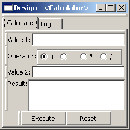 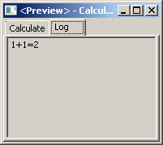 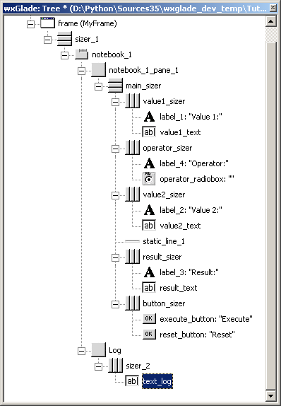
A notebook can only be added to an empty sizer slot. In our case, we want to keep the existing controls. So we add a slot to the toplevel sizer, create the notebook there and then move the controls to the first notebook page. After that we delete the empty slot.
Create a slot for the notebook:
Go to the toplevel sizer and select "Add Slot":
Add a notebook:
- click on the Notebook icon in the section "Containers" to start placing a notebook
- click on the hatched area in the Design window or on the sizer slot
 in the Tree window
in the Tree window
- in the dialog, select wx.NB_TOP to place the notebook tabs at the top
The newly created notebook will have one page already, which consists of just a panel. It will have a default name like "notebook_1_pane_1".
Fill the first page:
Move the existing controls to the first notebook page:
drag the containing sizer to the notebook pane
(i.e. the panel for the first page)
(alternatively, use Cut & Paste)
|
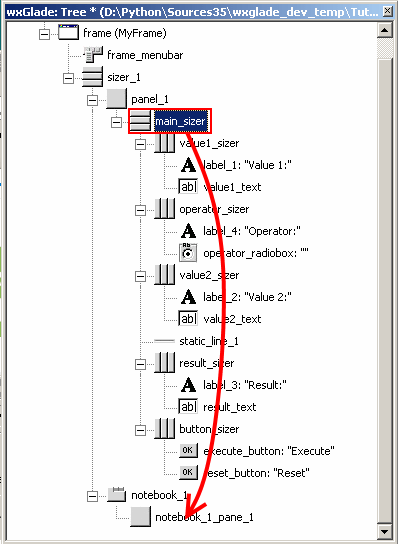 |
delete the old, empty panel: |
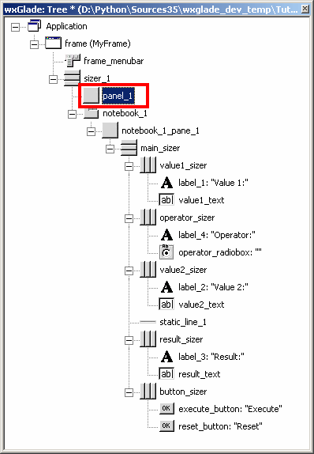 |
-> the design window should look like this: |
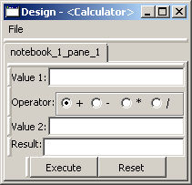 |
Define the other notebook page and the tab labels:
- click on the notebook in the Design window or the Tree window
- the Properties window should now display the property editor for the notebook
- go to the tab "Widget", click "Add" to add a page and enter the headings for the notebook pages
- click the "Apply" button
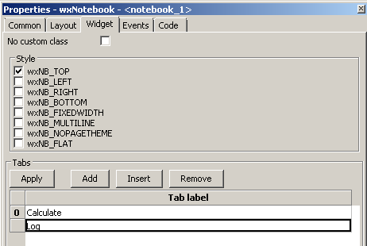
Fill the second page:
You should know how to do this by now:
- add a sizer to the notebook pane (with a single slot)
- add a text control to the sizer slot
- set the layout: Proportion 1 and EXPAND such that the text control will fill the whole page
Part 3: Use of Spacers
Sometimes you need to keep some space in a sizer, either with a fixed size or growable, e.g. to have a gap between two controls or to align two controls to the left and the right edge of a window or to align a control to the center.
To add a spacer, click the spacer icon  and place it in a sizer slot.
and place it in a sizer slot.
In our example, we may place a spacer to the left and right of the operator radio box to center it:
- add two empty slots
- insert spacers into these slots (e.g. with width 20 and height 0)
- set their Layout properties to "Proportion: 1" to make them grow
|
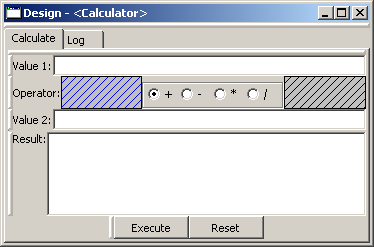 |
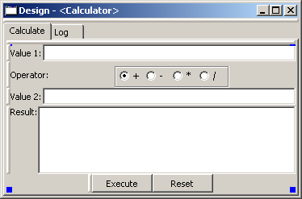 |
In the tree view you can see the structure; in the Properties window you can see the settings to make the spacers grow:
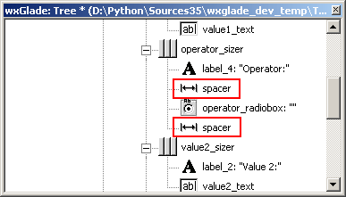 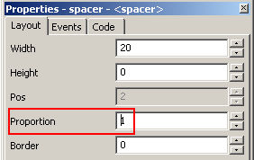
As the spacers have a height of 0, you will not see them in the design window.
If you don't like this, you may actually set the Height property to a different value and maybe even set "EXPAND". For the actual window this will not make a difference, as the spacers are invisible, but the spacers will be visible in the design window:
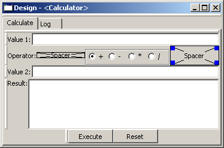
Part 4: Use Grid Sizers
The current version doesn't look perfect as the controls are not vertically aligned. To change this, the labels can be modified to have the same fixed size. This may cause problems when running on a different platform with a different font size. Instead, we will now move the controls into a grid sizer. There are two grid sizers which are supported by wxGlade:
- GridSizer: all columns have the same width, all rows have the same height
- FlexGridSizer: all rows and columns may have different sizes. Any row(s) and/or column(s) can be defined to be ‘growable’
- GridBagSizer: a grid that allows items to span multiple rows or columns. The editing logic is a bit different from the other sizers. There's no documentation yet.
For our calculator we need the FlexGridSizer as the first column is fixed and the second column should grow. The result will look like this:
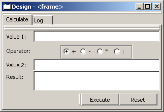
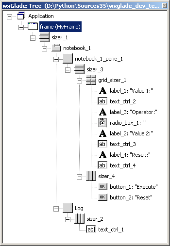
To get there:
- Insert a slot into the vertical sizer
- Add a grid sizer to this slot:
- In the grid sizer dialog, select 4 rows, 2 cols and "Flexible":
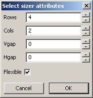
- Move the labels and controls to the slots of the newly created sizer
- Delete the old sizer
- In Properties "Grid": make column 2 and row 4 growable:

- To make the text controls actually fill the growable column: activate wxEXPAND for all of them (Properties "Layout" "Alignment")
Create Python Source Code
Code for the project windows
The options for code generation can be defined in the Properties window when the application object is selected in the Tree window:
For our example project we want to generate:
- Python code for wxWidgets 3.0 or Phoenix
- all code in a single file "Calculator.py"
So we select the root element "Application" in the Tree windows set the properties for it:
To actually create the source code, press the button "Generate Source" or hit Ctrl-G.
The generated source looks like this:
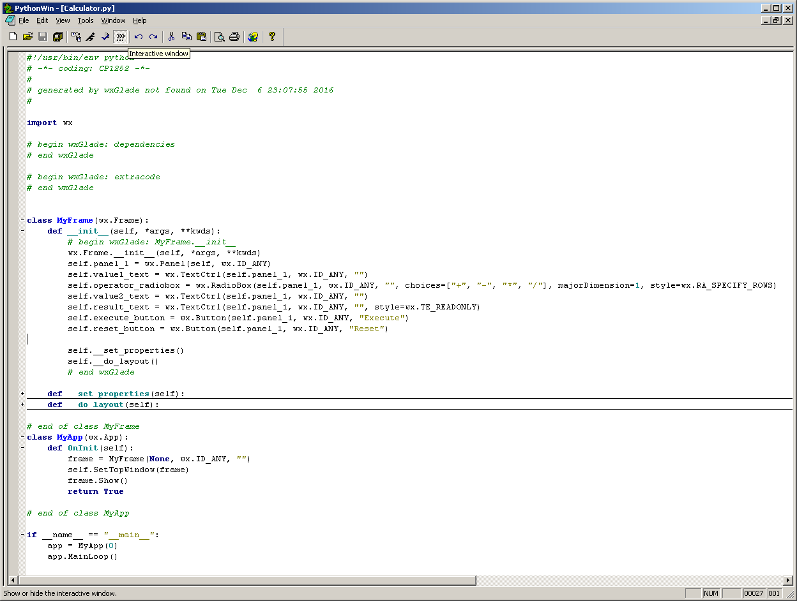
In this screenshot some parts were folded. There's a class for the main window MyFrame and at the bottom there's code to create and run a simple application app = MyApp(0).
If you don't want these, just deactivate the checkboxes at Name and Class:
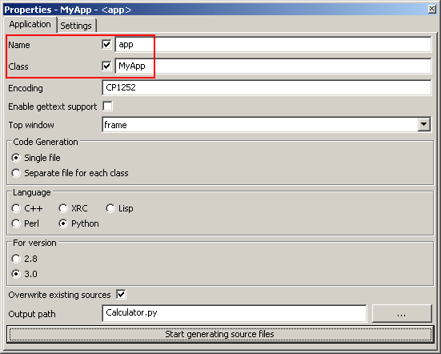
When you run the Python file, the application is run and the frame created:
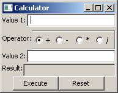
To use the generated code and extend it with the required functionality, it's best to create another Python file, import the generated code and use app/MyApp as template.
In the generated code you can see assignments like self.result_text = wx.TextCtrl(...). This allows you to access the control via the attribute result_text. You may e.g. call frame.result_text.SetValue(str(result)) to display a value in the Result text control.
Some widgets like StaticText are not accessible as attributes by default. You can change this by going to Properties->Widget and checking 'Store as attribute'. For Sizers you can achieve the same on the "Common" tab.
As of now, nothing will happen if the user hits the "Execute" button. So we need an event handler for this.
Code for event handlers
Traditional programs or scripts usually have a defined flow. GUI programs on the other hand, are event-driven and the flow depends on the user‘s actions. The events like mouse clicks are delivered from the operating system or window manager to the application. The receiving side is an infinite loop, called ‘event loop’ or ‘main loop’. When you have a look at the last lines of a Python file that wxGlade wrote, you will see that the MainLoop method of your application is called. The main loop receives events from e.g. the Windows operating sytem and dispatches it to windows and controls. To handle things like mouse clicks, menu selections, button clicks etc. you need to register handlers.
wxGlade allows you to enter handler names. For any of these names, empty method stubs will be generated in the source code file and the methods will be bound when the window is created. Alternatively, you may define and register handlers yourself.
Example: button event EVT_BUTTON
The main event of a button is EVT_BUTTON. In the following example we want to call a method on_execute_button_clicked whenever the "Execute" button is clicked.
Method 1: use wxGlade
In the Properties window you can see the events (most controls have more than just one event) and enter the handler name:
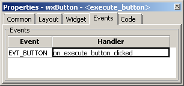
The generated code will look like this:
def init(self, *args, **kwds):
self.execute_button = wx.Button(self.notebook_1_pane_1, wx.ID_ANY, "Execute")
self.Bind(wx.EVT_BUTTON, self.on_button_clicked, self.execute_button)
def on_execute_button_clicked(self, event):
print("Event handler 'on_execute_button_clicked' not implemented!")
event.Skip()
To be useful, you need to derive from the MyFrame class and actually implement the method.
Method 2: register event handler
Alternatively, you can also register an event handler yourself, using code like self.execute_button.Bind(wx.EVT_BUTTON, self.on_execute_button_clicked).
Add a Menu
wxGlade includes a simple menu editor.
To attach a menu to a frame, go to Properties->Widget and check "Has MenuBar". This will add a menubar icon to the Tree window, just below the frame's icon. To open the menu editor, click the "Edit menus..." button.
The following screenshots are from the file examples/Allwidgets28.wxg:
The right one is from the menu editor. The bottom part just lists the items, where the hierarchy is visualized by indentation.


As an exercise, we will now add a "File" menu with two entries to our calculator window.
When you hit "Edit menus..." for the first time, the bottom part of the editor window is almost empty. It will just contain a default entry "item".
To create the required menu structure, change the label to "File".
To create the first item, hit "Add" and then the ">" button to turn it into a submenu item and then change the label to "New".
Do the same again for an item "Exit".
As of now, these items would not yet call any code when selected. So the "Event Handler" field needs to be filled with e.g. "on_menu_File_New" and "on_menu_File_Exit" for the two items.
When done and after hitting the "Start generating source files", the editor and the created code should look like this:
 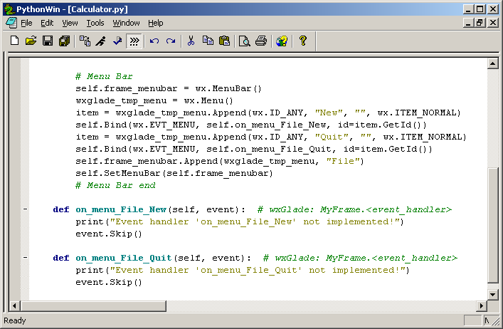
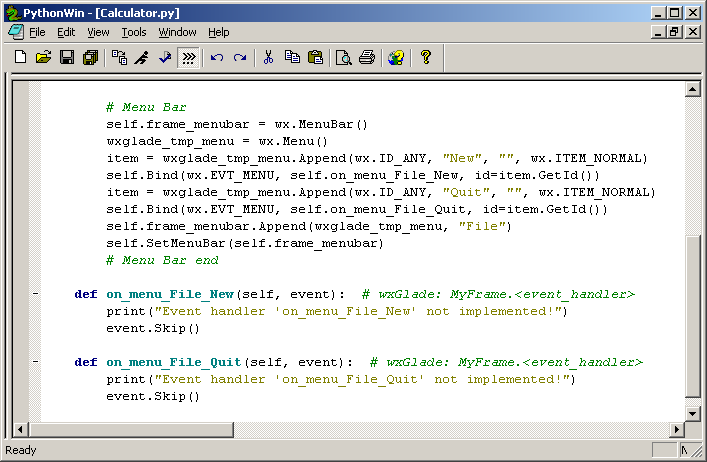
If you want to access a menu item from your program, e.g. to check or clear a checkable menu item, you need to enter a name into the "(Attribute) Name" field.
Menu Handler Example: File Quit handler
To be able to close the application from the menu, you need to implement the event handler for the Quit menu item:
def on_menu_File_Quit(self, event):
self.Close()
Calling the Close method on the main frame will close the frame and the application's MainLoop will terminate.
Add a Status Bar
To attach a status bar to a frame, go to Properties->Widget and check "Has StatusBar". This will add a statusbar icon to the Tree window, just below the frame's icon.
To add/remove fields to the status bar, go to Properties -> Widget -> Fields and use the Add/Insert/Remove/Apply buttons.
If you set the size of a field to a negative value like -1 or -2, it will grow to fill the available space.
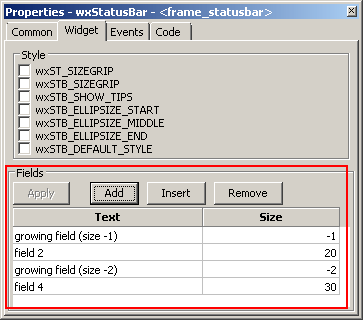 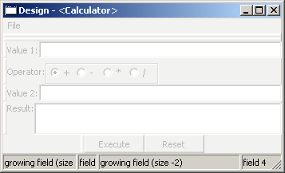
Add a Toolbar
The toolbar editor needs some improvements, similar to the new version of the menu editor.
Buttons and other controls are not supported yet
The logic for creating and editing a toolbar is the same as with menu and status bars.
Dialogs, Frame arguments
A wxGlade project may contain any number of toplevel Frames or Dialog. In the application properties you need to select one frame as "Top window":
The other windows are usually called from your code. Have a look at the generated code to see how to call it.
Bitmaps
For some widgets you need to specify one or more bitmaps. There are several options how to do this:
|
Description |
example |
generated code |
| Bitmap Path |
Specify the path to the bitmap file. |
/usr/share/icons/application.png

|
C++:
wxBitmap("/usr/share/icons/application.png",
wxBITMAP_TYPE_ANY)
|
statement "var:<variable name>" |
Navigate through tree |
var:my_bitmap_path |
C++:
wxBitmap(my_bitmap_path, wxBITMAP_TYPE_ANY)
|
statement "empty:<width>,<height>" |
Creates an empty bitmap of the specified size (min. 1,1) |
empty:32,32 |
Python: wx.EmptyBitmap(32, 32)
C++: wxBitmap(32, 32)
|
statement "art:<ArtID>,<ArtClient>" or
"art:<ArtID>,<ArtClient>,<width>,<height>" |
Create a bitmap using wxArtProvider. |
art:wxART_GO_UP,wxART_OTHER,32,32 |
Perl:
Wx::ArtProvider::GetBitmap(
wxART_GO_UP, wxART_OTHER,
Wx::Size->new(32, 32))
|
statement "code:<code chunk to return a wxBitmap>" |
This just inserts the given code. |
code:if (x == 0) get_bitmap1() else
get_bitmap2();
|
C++:
if (x == 0) get_bitmap1() else get_bitmap2();
|
Custom Widget
Very often you may want to use a widget that is not supported by wxGlade.
For this, just insert a Custom Widget  as placeholder.
as placeholder.
You will be prompted for a class name. In the Design and Preview windows, just a placeholder will be shown.
The "Common", "Widget" and "Code" tabs in the Properties window for an example "ImagePanel" will look like this:
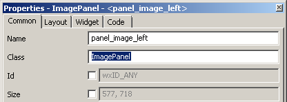
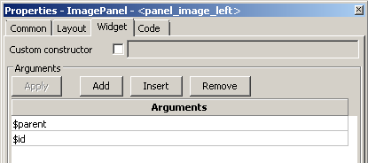

The generated code for this example will look like this:
Import statement at the head of the file:
# begin wxGlade: extracode
from ImagePanel import ImagePanel
# end wxGlade
Instantiation of the class:
self.panel_image_left = ImagePanel(self.main_panel, wx.ID_ANY)
The Arguments $parent and $id were replaced with the required code. There are two more magic arguments: $width and $height
Reference: Keyboard and Mouse Actions
Tree Window:
| Double Click on toplevel control like Frame |
Show Design Window Expand child items |
| Cursor Up/Down |
Navigate through tree |
| Right Click on Application right after loading |
Expand all items |
| Drag & Drop to empty sizer slot |
Move item(s) to another slot |
| Drag & Drop to slot with widget |
Insert item(s) before (new slot is inserted) |
| Drag & Drop to sizer |
Append item to sizer (new slot is appended) |
| Ctrl Drag & Drop |
Copy item(s) to another slot |
| F2 |
Edit control name (and label for some controls) |
Tree and Design Window
| Ctrl when adding a sizer/control |
stay in edit mode, to place multiple controls |
| Drag & Drop between Tree and Design Window |
supported |
| Del |
Remove Control from slot
Remove empty slot
|
| Ctrl-I |
Insert sizer slot |
| Ctrl-A |
Add sizer slot |
| Ctrl-Y |
Re-do single property modification |
| Ctrl-R |
Re-do property modifications |
| Arrow up/down |
go to previous/next menu item |
Palette Window / All
| F2 |
Show Tree Window |
| F3 |
Show Properties Window |
| F5 |
Show/Refresh Preview Window |
| Ctrl+S |
Save file |
| Ctrl+G |
Generate Code |
Some more keyboard shortcuts can be found in the menus.
Further reading:
The demo is the most important resource for exploring the available controls!
Maybe also have a look at the samples directory.
On Windows, you may prefer the single file chm documentation, even though it's for C++.
For a start look at
Categories -> Class List by Category ->
- Controls
- Window Layout
- Events
- Managed Windows
- Miscellaneous Windows
- Common Dialogs
wxGladeTutorial (last edited 2017-05-28)


{kind=link}
{kind=link}
{kind=link}
{kind=link}
{kind=link}
{kind=link}
{kind=link}
{kind=link}
{kind=link}
{kind=link}
{kind=link}
{kind=link}
{kind=link}
{kind=link}
{kind=link}
{kind=link}
{kind=link}
{kind=link}
{kind=link}
{kind=link}
{kind=link}
{kind=link}
{kind=link}
{kind=link}
{kind=link}
{kind=link}
{kind=link}
{kind=link}
{kind=link}
{kind=link}
{kind=link}
{kind=link}